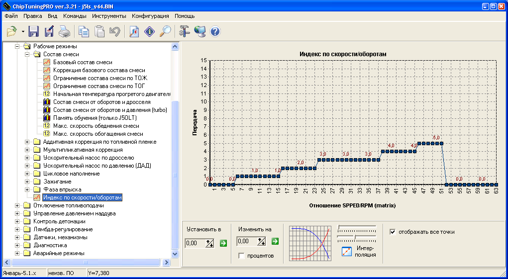
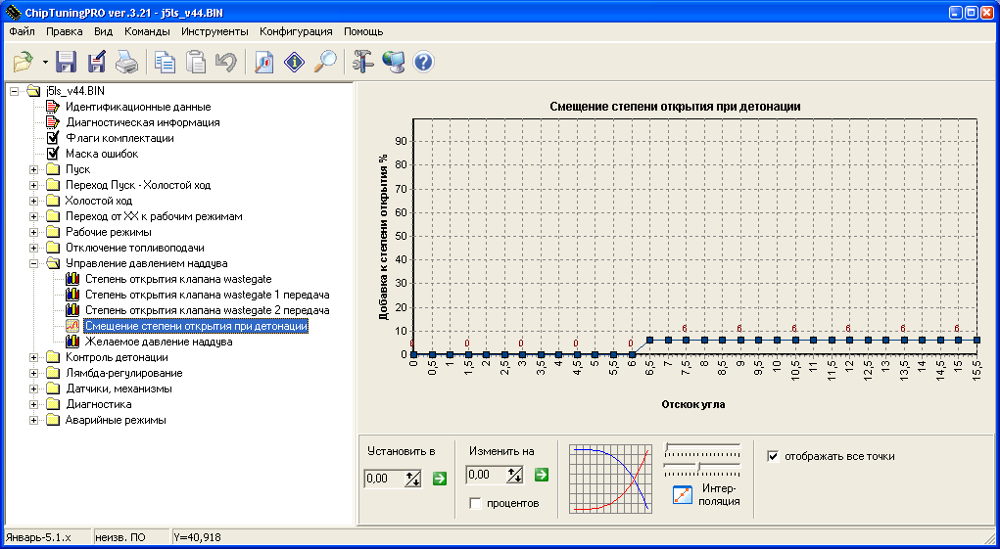
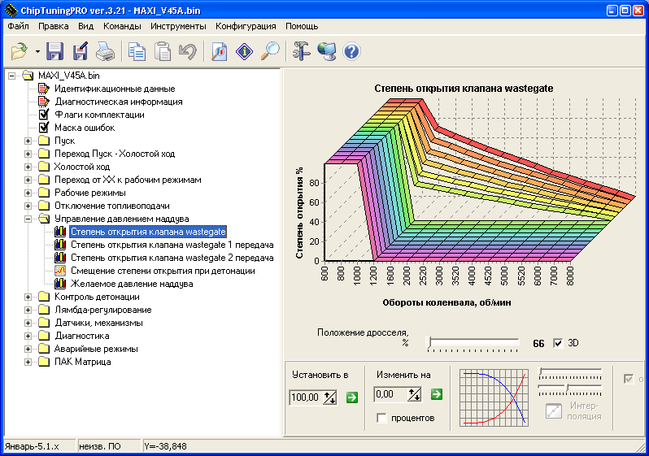

J5 light sport V43A карты от 13.09.2008
www.oktja.ru
(c) 2005-2008 emmibox
Внимательно прочитайте инструкцию перед началом калибровки прошивки J5ls!
В J5LS убраны следующие таблицы константы и алгоритмы.
1) Начальный коэффициент коррекции топливоподачи (таблицы лямбды инициализируются коэффициентом "1.00").
2) Состав смеси в экономичном режиме, мощностном режиме, для работы с нейтрализатором. Для работы с нейтрализатором и ЛЗ всегда используется коэффициент 14.7, состав определяется новой таблицей (дроссель/обороты).
3) УОЗ в мощностном режиме, экономичном режиме, при рециркуляции.
4) Зоны режимов (переходная по дросселю, ширина переходной зоны).
5) Коэффициент динамической коррекции УОЗ (в режиме ускорения). Температура включения динамической коррекции, Максимальное смещение УОЗ по динамической коррекции. Все эти коэффициенты и связанные с ними алгоритмы запаздывания углов просто потеряли смысл, когда угол в таблице УОЗ стал определяться дросселем.
6) Барокоррекция и все, что с ней связанно (все равно не работает).

7) Обеднение по закрытию дросселя и все, что с ним связанно (также не работало ни в одной прошивке). Режм отсечки топлива по 0% дросселя оставлен.
8) Рабочие режимы
коррекция уоз холодного двигателя (а также температурные пределы ее работы).
9) ХХ
начальная коррекция времени впрыска ХХ.
10) Алгоритм детектирования пропусков воспламенения.

11) Таблица -
Начальная коррекция времени впрыска
12) Таблица
поправка при продувке адсорбера
.
13) Режим
и связанные с ним незначительные изменения ПО.
14) Поддержка иммобилизатора и работа с EEPROM.

Изменения.
1) Возможность установки отсечки топлива вплоть до 10200 (при этом не нужно менять сами таблицы квантования и калибровки, на оборотах 7650-10200 двигатель работает по режимной линии 7650!).
2) В таблице обучения лямбда-зонда режимная точка задается дросселем, а не GBC.
3) Таблица "Рабочие режимы / Зажигание / Коррекция УОЗ по температуре" опущена на 5 градусов, также на 5 градусов уменьшено
. Это необходимо, чтоб свести все поправки по температуре к 0 градусов в зоне рабочих температур двигателя, и таким образом привести
к реально реализуемому углу на прогретом двигателе.
4) Возможность работы в любом ЭБУ Январь-5.1 включая работу с одновременным впрыском (2111-71). Возможность работы в инженерном ЭБУ Январь-5.1. Работа в блоках новой аппаратной реализации с ИМС контроллера детонации HIP9011 (выпуск после 08.2005

c прошивкой A5V05N35) Работа в VS5.1 old работа в блоках Korvet 4.5 (абит).
5) Возможность работы с ДАД и ДТВ а также с ДТВ
, возможность работы на проводке от
(дтв на 44 ноге, дад на 40-й ноге).
6) Константа
минимальное время впрыска
перенесена в вкладку
.
7) Возможность запретить адаптацию положения РХХ по расходу воздуха при регулировании оборотов ХХ. (для упрощения настройки прошивок под нестандартное железо).
8) Изменена таблица квантования оборотов, возможность задания таблицы квантования до 10200
изменены все калибровки по оборотам.
Добавлены следующие таблицы и калибровки.
1) Зона лямбда регулирования по дросселю. (Положение дросселя, ниже которого автомобиль работает на составе 14.7 в замкнутом цикле, если в комплектации есть lambda зонд).
2) Уоз Базовое. (обороты/дроссель) Пересчитано из таблиц экономичного + мощностного режима от стандарта
простор для творчества оставляем.
3) Состав смеси. (обороты/дроссель) Эмпирически оптимальный состав смеси от дросселя по моим понятиям о составе смеси для двигателя 2112. ;) Если мои понятия не совпадают с вашими
меняйте как хотите. Кстати - мои понятия частенько меняются от прошивки к прошивке ;)
4) Добавлен пункт
Переход от ХХ к рабочим режимам
Этот пункт определяет дополнительное топливо при переходе от ХХ к нагрузке, переменные ранее недокументированные и недоступные для редактирования.
GTCDR при переходе от ХХ к рабочим режимам
Коррекция GTCDR при переходе от ТОЖ
. Эти переменные следует
если наблюдается неудовлетворительное поведение автомобиля в зоне около нулевых положений дросселя (выход из ХХ, троганье).
5) Тарировки ШДК и EGT зонда (используются в составе комплекса
при подключении EGT и ШДК в инженерном ЭБУ).
6) Коррекция УОЗ по температуре воздуха (если в комплектации есть ДТВ).
7) Управление давлением наддува и связанные с этим калибровки.
8) Калибровка для компенсации отклонения от абсолютной шкалы по температуре воздуха.
Установка на авто.
Прошивка j5ls может работать в нескольких вариантах комплектации:
1) ДМРВ. (гражданский вариант).
Снять ВСЕ флаги комплектации в "Флаги комплектации J5LS".
Снять флажок "Флаги комплектации/Датчик температуры воздуха".
Остальные флаги комплектации выставить в соответствии с наличием
датчиков и исполнительных механизмов на автомобиле.
2) ДАД + ДТВ. (гражданский вариант c подключением к ресиверу, турбокомпрессорный двигатель или гражданский 4-х дроссельный впрыск с регулятором холостого хода).
Установить флаги:
"Флаги комплектации/Работать без ДМРВ (ДАД или по дросселю)"
"Флаги комплектации/Корректировать БЦН по ДТВ"
"Флаги комплектации/Датчик температуры воздуха".
"Флаги комплектации/ДТВ подключен на 44 пин вместо 51-го".
"Флаги комплектации/ДАД подключен на 40 пин вместо 7-го".
Снять флаги:
"Флаги комплектации/Барометрическая коррекция дроссельного режима"
"Флаги комплектации/Рассчитывать наполнение по таблице БЦН"
ДТВ GM (нива) подключается одним контактом на 44 ногу ЭБУ, а другим на Массу датчиков (например) массу ДМРВ. ДАД подключается на 40-ю ногу ЭБУ (можно использовать дад от волги или от нивы GM или MPX4250AP). Достоинство такого подключения позволяет использовать прошивки как под ДАД так и под ДМРВ без аппаратных переделок.
На атмосферных двигателях
Для подключения нам понадобится дополнительный провод и контакт "ласточкин хвост". ДАД подключается так:
Сводная таблица по Датчикам Абсолютного Давления.
Волга 45.3828
GM Нива моновпрыск
Тип двигателя: A-атмосферный, T-турбокомпрессорный ( макс избыточное давление)
+5v (12 пин ЭБУ)
Земля (30 пин ЭБУ)
Cигнал (40 пин ЭБУ)
Калибровки датчиков абсолютного давления.
Наклон характеристики (кпа/вольт)
18.75 (19.256)
Смещение (вольт)
0,433 (0.527)
Также необходимо задать тарировки датчиков указанные в таблице, ДТВ по умолчанию GM подключенный к 44 ноге (резистор подпора 1ком).
Для других ДАД
тарировки считаются исходя из формулы преобразования напряжения на выходе датчика в абсолютное давление воздуха:
P(hpa) = (Udad+Cмещение)*Наклон
(press mmHg * 0.13332 = press hPa)
Для работы с ДАД необходимо задать объемный коэффициент для вашего двигателя
Датчики и механизмы/ДАД/Цилиндровый объем двигателя
. Для этого объем вашего двигателя (1499 для стандарта) делим на 4 и полученную цифру, вставляем в прошивку при помощи программы CTP.
Напоминаю, что поправки ДАД не откатаны. Поэтому при установке ДАД-а прошивка оказывается абсолютно ненастроенной. Вам необходимо настроить
Рабочие режимы/Цикловое наполнение/ Поправка циклового наполнения
это ничто иное, как коэффициент наполнения двигателя воздухом, программа, зная объем двигателя, давление и температуру рассчитывает теоретическое поступление воздуха в двигатель при полном отсутствии сопротивления, после чего производится коррекция по коэффициенту наполнения для соответствия реальному наполнению двигателя воздухом. Таблица
поправка циклового наполнения
зависит от конфигурации впуска двигателя (валов, гбц).
Поправки откатываются с помощью комплекса
В версии j5ls_v43 появилась дополнительная калибровка, компенсация отклонения от абсолютной шкалы по температуре воздуха (проблема обнаружена Andy Frost). Калибровка находится в вкладке
.
Если задроссельное пространство разделено - ДАД ДОЛЖЕН БЫТЬ ПОДКЛЮЧЕН КО ВСЕМ ЦИЛНДРАМ 4-МЯ ТРУБОЧКАМИ, ТАКИМ ОБРАЗОМ, ЧТОБЫ ОБЕСПЕЧИВАЛОСЬ РАВНОУДАЛЕНИЕ ШТУЦЕРА ДАД ОТ ВПУСКНЫХ КЛАПАНОВ. Если в системе имеется ресивер
ДАД подключается к ресиверу через отдельный штуцер, допускается подключение ДАД через тройник с регулятором давления топлива.
3) Только ДТВ. Без ДМРВ-ДАД. (не допустимо применять на гражданских двигателях и двигателях оснащенных регулятором холостого хода).
Установить флаги:
"Флаги комплектации/Работать без ДМРВ (ДАД или по дросселю)"
"Флаги комплектации/Корректировать БЦН по ДТВ"
"Флаги комплектации/Датчик температуры воздуха".
"Флаги комплектации/Расчитывать наполнение по таблице БЦН"
"Флаги комплектации/ДТВ подключен на 44 пин вместо 51-го".
Снять флаги:
"Флаги комплектации/Барометрическая коррекция дроссельного режима" "Маска ошибок/0102-Низкий уровень ДМРВ"
"Маска ошибок/0103-Высокий уровень ДМРВ"
В этом режиме необходимо, чтоб таблица "базовое цикловое наполнение" абсолютно соответствовала наполнению двигателя воздухом! А в таблицу "поправка БЦН" нужно во все ячейки поместить значение 1.00.
Дтв GM Нива подключается на 44 ногу ЭБУ (2-м контактом на массу датчиков).
В этом случае цикловое наполнение двигателя воздухом определяется как:
ЦНВ =
Значение из таблицы
базовое цикловое наполнение
в текущей точке по дросселю и оборотам
Значение из таблицы
Датчики и механизмы/ДТВ/ мультипликативный коэффициент коррекции GBC по температуре воздуха
определяемое режимной точкой по ТВ
Для настройки топлива в этом режиме идеально подходит комплекс
. Однако принципиально возможно откатать БЦН c ДМРВ, используя например DTOOL, а потом переключится на работу по дросселю.
Напоминаем вам, что в этом режиме не используется фактическое давление воздуха, при этом имеется ошибка состава выраженная как:
Атмосферное давление сейчас (mmHG)
Ошибка = -----------------------------------
Атмосферное давление при настройке (mmHG)
Ошибка фактически определяет множитель ошибки состава. Связанно это с тем, что ссистема не знает плотность воздуха попадающего в двигатель.
Для Москвы предел зафиксированных летом 2005 года АД составляет 731-762 ммртст, следовательно, ошибка находится в пределах 0,95-1,04 и элементарно компенсируется на малых нагрузках, если в системе есть ДК.
Естественно в условиях, где колебания давлений больше указанных или имеются перепады высот (горная местность) этот вариант установки неприемлем.
4) ДТВ + ДАД в режиме баро коррекции (недопустимо применять на гражданских двигателях и двигателях с регуляторами холостого хода).
Вариант реализации доступен начиная с j5ls_v35
Установить флаги:
"Флаги комплектации/Работать без ДМРВ (ДАД или по дросселю)"
"Флаги комплектации/Корректировать БЦН по ДТВ"
"Флаги комплектации/Датчик температуры воздуха".
"Флаги комплектации/Рассчитывать наполнение по таблице БЦН"
"Флаги комплектации/ДТВ подключен на 44 пин вместо 51-го".
"Флаги комплектации/Барометрическая коррекция дроссельного режима
Режим полностью аналогичен предыдущему с той лишь разницей, что описанная ошибка компенсируется ДАД измерением давления в атмосфере. Т.е. ДАД должен быть установлен, но не подключен к ресиверу трубкой.
5) ДАД - Зажигание в карбюраторном двигателе (двигатель с сдвоенными карбюраторами ).
Вариант реализации доступен начиная с j5ls_v42
При установке системы управления Январь-5.1 на карбюраторный двигатель, можно применить прошивку j5ls для грамотного управления зажиганием. Для этого необходимо:
Установить флаги:
"Флаги комплектации/Зажигание по ДАД (карбюраторный двигатель)".
"Флаги комплектации/Работать без ДМРВ (ДАД или по дросселю)"
"Флаги комплектации/ДАД подключен на 40 пин вместо 7-го".
Флаги комплектации/Выбирать УОЗ и ALF из таблиц по давлению
"Флаги комплектации/Рассчитывать наполнение по таблице БЦН"
Снять флаги:
"Флаги комплектации/Барометрическая коррекция дроссельного режима"
"Флаги комплектации/Рассчитывать наполнение по таблице БЦН"
"Флаги комплектации/Корректировать БЦН по ДТВ"
"Флаги комплектации/Датчик температуры воздуха".
"Флаги комплектации/ДТВ подключен на 44 пин вместо 51-го".
В маске ошибок снять флаги ошибок всех отсутствующих датчиков и ИМ.
В этом режиме в системе управления должны быть установлены 4 датчика:
ДПКВ.
ДТОЖ.
ДАД. (к 40 выводу ЭБУ) подключается в за дроссельное пространство. Если задроссельное пространство разделено - ДАД ДОЛЖЕН БЫТЬ ПОДКЛЮЧЕН КО ВСЕМ ЦИЛНДРАМ 4-МЯ ТРУБОЧКАМИ, ТАКИМ ОБРАЗОМ, ЧТОБЫ ОБЕСПЕЧИВАЛОСЬ РАВНОУДАЛЕНИЕ ШТУЦЕРА ДАД ОТ ВПУСКНЫХ КЛАПНОВ.
Датчик детонации.
Кроме того, ставится модуль зажигания 2112 и проводка. Этот режим будет полезен для настройки карбюраторного двигателя с WEBER-ами или другими много дроссельными карбюраторами. Он не требует установки в систему ДПДЗ
углы выбираются по оборотам и давлению!
Вам необходимо задать квантование давления:
Датчики и механизмы/ДАД/Минимум для квантования давления
Датчики и механизмы/ДАД/Диапазон квантования давления
=70kpa.
УОЗ настраивается в таблице по давлению!
В данном случае применение ДТВ не имеет смысла, поскольку карбюраторы не обеспечивают точный состав смеси и углы должны быть выставлены с достаточным запасом, заведомо большим, чем смещение по температуре воздуха.
Турботема в прошивках j5ls. (доступно начиная с j5ls_v42 кроме версий с индексом L.)
В комплектации ДОЛЖЕН БЫТЬ УСТАНОВЛЕН ДАД ПОДКЛЮЧЕННЫЙ К РЕСИВЕРУ и ДТВ! (2 вариант).
Режим турбо включается установкой флага
Выбирать УОЗ и ALF из таблиц по давлению
. После установки этого флага задействуются 2 таблицы составов смеси и углов, в которых уже фактором нагрузки является абсолютное давление в ресивере. Для обеспечения максимально эффективного использования значений таблиц УОЗ и ALF используется механизм квантования давления. Настройка этого механизма осуществляется путем изменения коэффициентов квантования:
Датчики и механизмы/ДАД/Минимум для квантования давления
минимально возможное давление в ресивере, по умолчанию Pmin=30kpa. Это нижняя линия нагрузки.
Датчики и механизмы/ДАД/Диапазон квантования давления
эта цифра определяет разницу между нижней и верхней линией нагрузки
косвенно максимальное давление в системе (предел таблиц) и получается путем вычитания из пикового давления Pmin. По умолчанию 222.9, что дает возможность дуть 1.5бара избытка (около 250кпа) при использовании датчика MPX4250AP. Если система работает в атмосферном режиме
должна быть = 70 (предел 100кпа).
ИЗМЕНЕНИЕ ЭТИХ ТАРИРОВОК ТРЕБУЕТ СООТВЕТСТВУЮЩУЮ МОДИФИКАЦИЮ ТАБЛИЦ ЗАЖИГАНИЯ И ТОПЛИВА в соответствии с требованиями, предъявляемыми калибруемым двигателем!
В режиме турбо обязательно следует настраивать механизм смещения УОЗ по ТВ для борьбы с детонацией, возможной при перегреве воздуха на впуске! Смещение в каждом конкретном случае определяется экспериментальным путем в зависимости от эффективности интеркуллера.
Поправка циклового наполнения по давлению - оборотам в режиме турбо. (доступно начиная с j5ls_v42 кроме версий с индексом L.).
Эта калибровка работает одновременно с поправкой по дросселю, если в комплектации есть ДАД.
Обычно по всей поверхности в атмосферных режимах = 1. В турбо используется для коррекции расчета воздуха и соответственно подачи топлива при давлениях выше 100кпа. В ближайшее время матрица будет автоматически выбирать в какой таблице корректировать поправку исходя из давления на впуске и таким образом настройка турбокомпрессорного двигателя более автоматизируется.
Ускорительный насос по нагрузке (давлению) в режиме турбо. (доступно начиная с j5ls_v42 кроме версий с индексом L.).
Один из важных механизмов расчета дополнительного топлива в режиме турбо. Фактически работает так:
Определяется дельта давления (скачок), если давление растет (требуется дополнительное топливо), дельта проверяется на превышение зоны нечувствительности.
Производится пересчет дельты давления (скачка) в дополнительное топливо с использованием 3-х таблиц:
Основная экстраполирующая таблица по температуре двигателя. Фактически максимальное ускорительное топливо определяется по ней путем экстраполяции скачка.
Коэффициент коррекции в зависимости от оборотов. Уменьшает полученное топливо в зависимости от оборотов двигателя (свойства впускного тракта и скорость-расход воздуха).
Коэффициент коррекции топлива в зависимости от давления в коллекторе в момент скачка (если система работает без избытка = 1, на высоких значениях давления может принимать значения близкие к 0).
Законы убывания дополнительного топлива аналогичны дроссельному ускорнасосу и определяются 2-мя коэффициентами убывания.
Если давление падает
дополнительное топливо должно убывать быстро, поэтому используется коэффициент уменьшения GTC 1 (который меньше). Если давление стационарно или растет, но незначительно
используется коэффициент уменьшения GTC 2 (который больше и принимает значения близкие к 1).
Использование ускорнасоса по давлению возможно как вместе, так и вместо дроссельного ускорнасоса. Если вы хотите запретить один из ускорнасосов
установите в 0 его экстраполирующие коэффициенты.
Управление давлением наддува в режиме турбо. (Доступно начиная с j5ls_v43 кроме версий с индексом L.).
Для управления наддувом используется электромагнитный клапан (возможно применение клапана продувки адсорбера) подключаемый между +12v и 17 выводом ЭБУ. (Если вы используете фишку продувки адсорбера необходимо переставить пин в разъеме ЭБУ с 5-й на 17 клемму.)
Поддержка работы с клапаном управления включается флагом
Клапан управления давлением наддува
в комплектации блока управления.
Подключение 2-х входового клапана осуществляется по следующей схеме:
Подбор жиклера.
Убираем трубочку с вестгейта, снимаем лог давления от оборотов.
Это максимальное давление, которое может развить турбокомпрессор.
Устанавливаем во всех поверхностях степень открытия клапана
90% Подключаем систему с жиклером 1мм
снова снимаем лог давления. В Идеале давление будет примерно на 10% меньше чем максимальное. Если давление больше
увеличиваем жиклер, если меньше
уменьшаем жиклер. Если реакции не удается добиться
можно попробовать задросселировать выход в атмосферу 2-м жиклером.
Добившись падения на 10% от начального, ставим во всех поверхностях 10% - снова снимаем лог давления
это будет минимальное давление.
Выстраиваем таблицы. (для первой 2-й и всех остальных передач используются разные таблицы).
Чем больше степень открытия клапана, тем меньше ход вестгейта и больше давление наддува.
Замечено, что в двигателях оборудованных турбокомпрессором, в которых наддув не управляется ЭБУ, диапазон регулирования двигателя по нагрузке резко заужен, на низких оборотах примерно на 20-30% положения дросселя двигатель уже развивает максимальный (для этих оборотов) крутящий момент, и имеет максимальное давление наддува (ограниченное механически), дальнейшее увеличение положения дросселя при этом уже не дает какого-либо эффекта регулирования. Одной из задач регулирования в данном случае стоит добиться линейной характеристики момента двигателя по отношению к положению дросселя.
Таблица
Степень открытия клапана wastegate
является базовой для управления давлением. В последних версиях микропрограммы таких таблиц уже 3
общая, и отдельно для 1 и 2 передач. Помните, что для того, чтоб влиять на давление наддува, прежде всего стоит выстроить правильно эти таблицу. Чем меньше степень открытия
тем ВЫШЕ давление.
Законы построения этой таблицы:
Как правило, до 35% дросселя степень открытия = 0%, что не дает системе развивать какое-либо избыточное давление и позволяет двигаться в относительно экономичном режиме по трассе.
По линии 100% дросселя - до момента где турбина не дует, что в каждом конкретном случае определяется опытным путем, может быть выставлен 100% (wastegate закрыт-давление максимально), далее степень открытия будет уменьшаться, ограничивая давление тем, которое вы желаете иметь в двигателе, это падение будет продолжаться по мере роста оборотов до некоторого предела, как правило на высоких оборотах давление должно наоборот падать. Если вы ограничиваете значение давления для вашего двигателя, скажем 1.4 избытка, то на 4000rpm оно должно начать падать и к 6000rpm достигать примерно 1 избытка! Также следует ограничивать давление в зоне максимального циклового наполнения, если вы не можете держать относительно большие углы и у вас возникает детонация.
Средние линии нагрузки как правило выстраиваются интерполяцией значений между 0% (35% дросселя) и полученной линией степени открытия клапана на 100% дросселя.
Построение таблицы производится при анализе логов комплекса
в которых отображается давление наддува, степень открытия клапана wastegate и положение дросселя.
Таблица
Желаемое давление наддува
позволяет вам выставить значения для механизма автоматического регулирования давления комплексом
, который будет реализован чуть позже.
Смещение степени открытия клапана при детонации
позволяет снизить давление наддува, если система обнаружила детонацию в каком-либо цилиндре. При небольших отскоках угла, как правило, установлены значения 0, поскольку детонация прекрасно подавляется самим механизмом регулирования УОЗ, при больших отскоках (8-10 градусов и более) в таблице устанавливаются значения +10-15% для снижения давления наддува путем уменьшения степени открытия клапана.
Настройка определителя передачи.
Производится с помощью ПАК
. Запустите
включите 1-ю и проехайте спокойно посмотрите на параметр RS= - это индекс в таблице определителя передачи.
Запомните в каких пределах он меняется и занесите по этим адресам цифру 1 в калибровку
Индекс по скорости/оборотам
, то же самое проделайте со всеми передачами. Важно точно определить передачи 1 и 2 так как они могут изменять алгоритмы работы программы в части регулирования давления наддува. Индекс в каждом случае будет зависеть от установленной на вашей машине ряда КПП и главной пары. Для одинаковых ряда и главной пары калибровка будет идентична.
Тонкости работы в блоках 2112-71 2111-71
Как правило, в 71 блоках не запаяно большое количество деталей, например цепи 51 ноги (ДТВ) все, что связано с ДК. Поэтому при конфигурировании прошивки или установке ДАД следует либо доработать ЭБУ, установив недостающие детали (руководствуясь схемой ЭБУ 2112-41) либо не использовать связанные с ДТВ и Лямбдой функции. Если детали каким-то чудом все же запаяли
обязательно после установки ДАД+ДТВ убедится (по логам пак
), что ЭБУ правильно определяет температуру воздуха.
Кроме того, при установке в блок 2111-71 вы должны обязательно установить галочку
одновременный впрыск
а в масках ошибок снять все флаги неисправностей связанные с ошибками отсутствующих драйверов (ошибки обрыва форсунок, адсорбера, нагревателя ДК, итд).
Замечено что прошивка неадекватно ведет себя в 2111
71 блоках на оборотах выше 6000. Связано это с алгоритмами работы с форсунками на этом блоке (закрытие форсунок происходит программно, и это требует больших ресурсов ЭБУ). Поэтому использовать прошивку на системах с проводкой 2111-71 имеет смысл только для гражданских двигателей. Идеальным решением для серьезных моторов является переделка проводки на 4 форсунки, и замена ЭБУ 2111-71 на 2111-61,2112-41,2112-71 в которых предусмотрена работа форсунок через специальный драйвер.
Работа в ЭБУ VS5.1 старой модификации. (доступно начиная с j5ls_v42 кроме версий с индексом L.).
Начиная с версии 4.2 Прошивка J5LS может без проблем работать в ЭБУ VS5.1
для этого следует установить в флагах комплектации галку
Тип ЭБУ VS5.1-42 (OLD) V5V05K17-L19
В блоке VS5.1 OLD поддерживаются все функции прошивки
включая работу с ДАД-ДТВ. Однако драйверная диагностика может работать некорректно (в связи с тем что аппаратно блок VS довольно сильно отличается от блока Январь-5.1.) Для чего при установке прошивок в блок VS рекомендуется ее запрещать.
Блоки VS5.1-72 прошивкой не поддерживаются (хотя черт их знает).
Новые модификации блоков VS также не будут работать с J5LS поскольку в них отсутствует большое количество необходимых для работы деталей, и доводка программы под эти блоки не является целесообразным.
Работа в инженерном ЭБУ J5Online Tuner.
Прошивка при установке флага комплектации
Инженерный ЭБУ
может работать в инженерном ЭБУ, по окончании настройки нужно просто снять флаг комплектации
Инженерный ЭБУ
и записать прошивку в обычный ЭБУ Январь-5. Не нужно использовать какие-либо программы переноса калибровок (которые работают зачастую неправильно). Если вы не снимите флаг
инженерный ЭБУ
то прошивка будет
в стандартных блоках управления непредсказуемо по прошествии некоторого времени.
Некоторые тонкости работы с J5 ONLINE Tuner
Перед тем как зашивать базовую прошивку в инженерный ЭБУ вы должны с помощью программы CTP 3.21 установить все флаги комплектации в соответствии с вашей проводкой и типом ЭБУ. Помните, что редактирование флагов комплектации непосредственно при работе инженерного ЭБУ недопустимо и ничего не дает! Если вы хотите изменить флаги комплектации, вы должны после изменения обязательно перезаписать прошивку в инженерном блоке. Для этого можно использовать программу Комбилоадер 218.
Также прошивка может работать в инженерном ЭБУ на базе VS 5.1 OLD! (одновременно ставятся галки VS51 и инженерный ЭБУ).
Настройка прошивки.
Настройка прошивки производится с применением программно-аппаратного комплекса
и подробно описана в его инструкции. Любые другие способы настройки не гарантируют абсолютно никакого результата и могут использоваться калибровщиками на свой страх и риск!
АЛГОРИТМЫ РАБОТЫ ПРОШИВКИ J5LS.
Расчет УОЗ в рабочем режиме.
Базовый угол опережения зажигания выбирается из таблицы "Рабочие режимы/Зажигание/Уоз базовое". Если выставлен флаг
Выбрать УОЗ и ALF из таблиц по давлению
то угол опережения зажигания выбирается из таблицы "Рабочие режимы/Зажигание/Уоз базовое (turbo)". Далее рассчитывается температурная поправка:
Температурная поправка действует постоянно, и определяется тарировкой "Рабочие режимы / Зажигание / Коррекция УОЗ по температуре ОЖ" +
Коррекция УОЗ по температуре воздуха
Это поправка на запаздывание зажигания(угол = --поправка).
По окончании всех расчетов угол ограничивается "Максимальным реализуемым УОЗ" и "Минимальным реализуемым УОЗ".
Hа последнем этапе производится по цилиндровый расчет углов, с использованием ячеек
обучения по детонации
. Смещение по детонации осуществляется, только если режимная точка попадает в "Контроль детонации/Зона контроля детонации", на угол не более чем "Рабочие режимы/Зажигание/Максимальное смещение УОЗ по детонации".
При аварии ДПДЗ УОЗ берется из таблицы "УОЗ при аварии ДПДЗ или ДМРВ", эта таблица, как и ранее в качестве нагрузки использует цикловое наполнение воздухом, а не положение дросселя!
Регулирование на ХХ и переходных режимах, критерии и механизмы настройки ХХ, положение РХХ и его адаптация.
Базовые уставки регулятора.
Уставка оборотов хх
это желаемые обороты холостого хода вашего двигателя.
Расчет уставки оборотов ХХ (JUFRXX):
Программа извлекает желаемые обороты холостого хода.
JUFRXX = по таблице
холостой ход/Уставка оборотов ХХ и зоны по RPM/Желаемые обороты
.
Производится адаптивное смещение оборотов (если разрешена адаптация уставки оборотов ХХ):
JUFRXX=JUFRXX+JDUFREQ
Производится расчет оборотов для определения границ 2-х зон переходных режимов:
JUFRXX1 = JUFRXX+JURFXX *
Холостой Ход/Уставка оборотов ХХ и зоны по RPM/Коэффициент 1 переходного режима
JUFRXX2 = JUFRXX1+JURFXX1 *
Холостой Ход/Уставка оборотов ХХ и зоны по RPM/Коэффициент 2 переходного режима
Если в комплектации НЕТ ДС, или есть флаг ошибки ДС, или установлен
признак движения
, производится добавка к уставке ХХ
JUFRXX=JUFRXX+
Смещение оборотов ХХ при движении
.
Расчет уставки УОЗ.
UOZXX=
Холостой Ход/Уставка УОЗ/Уоз на ХХ
Холостой Ход/Уставка УОЗ/Коррекция уоз на ХХ
.
Необходимо помнить, что уоз на ХХ не всегда определяется уставкой УОЗ. Вам необходимо помнить что это только начальная характеристика, в регулируемом режиме она может быть изменена пропорциональным регулятором оборотов. В режиме когда дроссель отпущен НО ФЛАГ ХХ ОТСУТСТВУЕТ
углы берутся либо из таблиц базового режима либо из таблицы
УОЗ при отсчечке топливоподачи
.
Расчет уставки РХХ для работающего двигателя.
Определяется начальное положение РХХ от температуры.
USSM=
Холостой ход/Уставка РХХ/желаемое положение РХХ
Рассчитывается добавка к РХХ по ошибке оборотов от мин порога.
USSM=USSM+(FREQ- JUFRXX2 ) *
Холостой Ход/Уставка РХХ/Коэффициент уставки РХХ
. (коэффициенты проверенны и обновлены
все тип топ).
Если FREQ < JUFRXX2
добавка = 0.
Критерии работы диспетчера режимов
выбор режима.
Условия для входа в режим ХХ (регулируемый режим) (вход осуществляется, если все условия в пункте выполняются одновременно).
Если состояние отсечки ЭПХХ=0 (нет отсечки топлива). THR<
ДПДЗ/Положение закрытого дросселя, таблица
, обороты < JUFRXX2
Если состояние отсечки ЭПХХ=/=0 (была или есть отсечка топлива). THR<ДПДЗ/Положение открытого дросселя, таблица
, обороты < JUFRXX1
При входе в ХХ состояние отсечки ЭПХХ принудительно становится = 0, т.е. отсечка топлива запрещается.
Условия выхода из режима ХХ c активацией переходного режима (от ХХ к нагрузке).
В режиме ХХ зафиксировано THR >
Положение открытого дросселя, таблица
.
В режиме активной отсечки топлива (эпхх) зафиксировано THR >
Положение открытого дросселя, таблица
.
Особенности протекания переходного режима от ХХ к нагрузке заключаются в подаче дополнительного топлива
ускорительным насосом
GTCDR. Калибровки дополнительного топлива доступны в соответствующем разделе (переход от ХХ к нагрузке).
Расчет положения РХХ в нерегулируемом режиме ПХХ (флаг ХХ сброшен), и рабочих режимах.
В этом режиме производится расчет уставки РХХ (см пункт
Расчет уставки РХХ для работающего двигателя).
Расчет адаптивного смещения РХХ производится следующим образом:
Если THR >
ДПДЗ/Положение закрытого дросселя
(дроссель открыт) то:
JUSSM=
Холостой ход/Адаптация РХХ на ПХХ/Смещение РХХ при открытом дросселе
Холостой ход/Адаптация РХХ на ПХХ/Максимальное смещение рхх при адаптации
Иначе если обороты ниже, чем порог JUFRXX2. То адаптивное смещение:
JUSSM=
Холостой ход/Адаптация РХХ на ПХХ/максимальное смещение РХХ при адаптации
Если обороты выше чем порог JUFRXX2, то адаптивное смещение убывает со скоростью определяемой
Период адаптации РХХ
(JUSSM=JUSSM-1)
При этом производится проверка на пределы адаптации (максимальное
минимальное смещение).
Положение РХХ в этом режиме определяется как:
SSM = USSM+ JUSSM
Положение РХХ ограничивается сверху
Пуск/Положение рхх при пуске
.
Основная цель данного режима
при закрытии дросселя обеспечивать плавное падение оборотов вплоть до входа в режим ХХ (регулируемый режим). Топливо и углы в нерегулируемом режиме берутся из таблиц
рабочего режима
. При настройке этого режима необходимо обеспечить, чтоб при любых положениях РХХ
обороты не зависали
, и в тоже время не падали слишком быстро (иначе двигатель может остановиться). Если двигатель глохнет
можно добиться зависания, увеличив уставку GB и свалить его из зависшего режима. Валить обороты на более менее гражданских автомобилях, лучше топливом. На спортивных (где не предъявляются требования к токсичности)
углами.
Расчет положения РХХ при пуске (адаптация после пуска)
Расчет уставки РХХ на пуске.
http://rotorman.nm.ru/j5-sport/j5ls_v46.rarПоложение РХХ на пуске определяется соответствующими переменными
Пуск/Подача воздуха
и не корректируются, пока обороты не превысят
обороты начала выхода из режима пуска
, после чего, расчет положения РХХ идет через желаемое РХХ.
Рассчитывается адаптивное смещение РХХ после пуска:
JUSSM=
Переход пуск - Холостой ход/Адаптация РХХ после пуска/Начальное смещение РХХ после пуска
Далее это смещение убывает на -1 со скоростью
Период адаптации РХХ после пуска
, до значения
Минимальное смещение РХХ после пуска
.
И наконец окончательное положение РХХ в этом режиме определяется как:
SSM = =
Холостой ход/Уставка РХХ/желаемое положение РХХ
+ JUSSM
Положение РХХ ограничивается сверху
Пуск/Подача Воздуха/Положение РХХ при пуске
Пуск/Подача воздуха/Положение РХХ при пуске холодного двигателя.
Как только адаптивное смещение РХХ достигнет минимума, режим пуска 2 будет отменен, и положение РХХ более не будет рассчитываться по этому алгоритму.
Цель настройки этого режима в уверенном запуске двигателя и выходе на обороты ХХ (без зависания и уж тем более остановки двигателя).
Регулируемый режим
холостой ход.
В этом режиме обороты ХХ стабилизируются 2-мя регуляторами.
1) П-регулятором УОЗ.
2) ПИ-регулятором положения РХХ.
В этом режиме не используется уставка РХХ!, начальное положение РХХ рассчитывается адаптивно.
Также в этом режиме производится компенсация рассогласования реального положения РХХ и программного положения РХХ (FSM)
этот алгоритм называется адаптацией положения РХХ по расходу воздуха и подробно описан ниже.
Фактически вы не можете влиять на положение РХХ в этом режиме, вам надо всего лишь добиться, чтоб при переходе в регулируемый режим (после пуска или при сбросе газа) положение РХХ оказалось как можно ближе к положению, определяемому регулятором, иначе возможно пере регулирование, что приведет к тому, что двигатель заглохнет.
Управление углом опережения зажигания на холостом ходу (регулируемый режим).
.... будет позже
Управление положением РХХ на холостом ходу (регулируемый режим) ... будет позже
Адаптация положения РХХ на холостом ходу по расходу воздуха.
Адаптация производится в регулируемом режиме (ХХ) суть этого алгоритма в том, что он позволяет убрать рассогласование истинного положения РХХ (положения клапана) и программной переменной
текущее положение РХХ
(FSM) опираясь на расход воздуха (с ДМРВ) и на тот факт, что расход через РХХ (его характеристика) соответствует калибровкам РХХ (что к сожалению не всегда выполняется). Этот алгоритм разработан для компенсации рассогласований неисправных или подклинивающих РХХ, которые могут постоянно возникать при работе двигателя (поскольку движение РХХ при работе двигателя происходит постоянно).
Адаптация также производится постоянно, но только в регулируемом режиме ХХ! Ее период определяется следующими переменными:
Холостой ход/Адаптация РХХ по расходу вохдуха/Задержка адаптации рхх холодного двигателя
Холостой ход/Адаптация РХХ по расходу воздуха/Задержка адаптации рхх горячего двигателя
.
Адаптация производится с предварительной фильтрацией нескольких параметров системы управления, на интервале 128 циклов (2.5 секунды), при этом суть фильтрации в определении среднего значения параметров на этом интервале. Параметры, подлежащие фильтрации:
Ошибка регулятора оборотов по среднему направлению регулирования (на уменьшение или на увеличение).
Ошибка регулятора оборотов по среднему отклонению.
Cреднее фильтрованное текущее положение РХХ (Filt_FSM)
Средний расход воздуха (Filt_GB) - фактически только он используется при адаптации!
Если на интервале фильтрации была изменена уставка оборотов (JUFREQ) то все данные фильтрации сбрасываются и адаптация не производится! Таким образом уставка (желаемые обороты) должна быть стабильна в течении 2.5c.
Алгоритм адаптации следующий:
Средний фильтрованный расход воздуха Filt_GB ограничивается сверху константой
Холостой ход/ПИ-Регулятор добавочного воздуха/Максимальный расход воздуха при регулировании
Рассчитывается истинное положение РХХ по воздуху (шагов).
Real_FSM = Filt_GB *
Регулятор добавочного воздуха/Коэффициент производительности РХХ
Холостой ход/Адаптация РХХ по расходу воздуха/Начальное смещение РХХ при адаптации
Reaf_FSM ограничивается сверху одной из констант
Пуск/Подача Воздуха/Положение РХХ при пуске
Пуск/Подача воздуха/Положение РХХ при пуске холодного двигателя
(в зависимости от Т двигателя).
Далее программа присваивает текущему и желаемому положению РХХ значение Real_FSM
FSM=Real_FSM SSM=Real_FSM
Таким образом программное рассогласование будет компенсировано но сам РХХ не при этом не сместится
т.к. FSM=SSM.
В версиях начиная j5ls_v34 весь этот алгоритм может быть отключен и синхронизация положения РХХ может производиться только при выключении зажигания (когда РХХ закрывается до упора и выставляется FSM=0). При этом если у вас есть комплекс j5olt
то вам необходимо знать, что отключение и подключение происходит в реальном времени.
Ошибки регулятора по оборотам в алгоритме адаптации не учитываются и по-видимому использовались специалистами Автоваза для диагностики.
Благодарности.
Andy Frost (идеи, тестирование, софт).
Sander (тестирование, идеи).
doncha (тестирование).
Tracer_MIPT (за блок VS5.1 old ;)
Статическая производительность некоторых популярных форсунок BOSCH.
(данные для давления в рампе 3 бара в мг/мс, в квадратных скобках сопротивление обмотки в омах).
996 (ваз)
1,725 [12] 444 (audi)
1,9583 [12] 560 (gaz)
2,5 [15,9] 714 (bmw)
2,5 [15,9] 902 (vag)
2,5716 [15,9] 447 (vag)
2,8 [12] 998 (crysler) 2,86 [12] 455 (porshe)
2,873 [12] 462 (audi)
3,088 [12] 905 (ваг)
3,1983 [15,9] 756 (ford) - 3,795 [14,5] 911 (ford)
3,83 [14,5] 923 (vag)
4 [14,5] 422 (fiat)
4,3333 [15,9] 431 (cааб)
4,3333 [12] 450 (fiat)
4,35 [15,9] 968 (ford) - 4,48333 [14,5] 791 (porshe) - 5,18333 [12] 558 (ford)
5,4466 [14,5]
Динамическая производительность
по грубым прикидкам для всех 12омных форсунок примерно одинаковая и должна оставатся стандартной, для форсунок волги и всех 15,9 ом может быть взята из прошивок от Волги!
Отличия разных версий прошивок j5 light sport.
v1
первая j5ls
имеется ошибка в работе с ДАД.
v2 - исправлена ошибка в работе ДАД, версия украдена
и выложена в интернете нахаляву...
v25b
1-я версия работающая на ЭБУ 2111-71, совмещены bin и bir, новая методика генерации карт, тарировки пропусков воспламенения, есть ошибка в протоколе диагностики. Не связывается с компьютером.
v26b
исправлена ошибка в протоколе диагностики.
v27
появилась возможность ускорить обучение по лямбде путем запрета экстраполяции результатов обучения конкретной точки на вcю таблицу (для настройки нестандартных двигателей).
v31
убрана таблица
начальная коррекция времени впрыска на хх
, полностью переписаны карты калибровок связанные с ХХ, в описание добавлен алгоритм работы нерегулируемых режимов ХХ и диспетчера, добавлена работа с ШДК LC-1 по аналоговому входу и датчиком EGT (для ПАК
), замечено, что на 2111-71 блок сбрасывается на 6500rpm ватчдогом.
v31a
попытка исправить сброс 71-го эбу на 6500rpm
v32
убрано детектирование пропусков воспламенения, убранны некоторые константы и алгоритмы, снята привязка прошивки к содержимому eeprom, возможность из CTP3 задавать ответы на некоторые диагностические поля ранее находившиеся в eeprom, убранна поддержка кондиционера, несколько переделаны калибровки в обнаружителе детонации (более правильные карты), добавленна память обучения по ДК, память обучения по ДД. ДТВ может быть подключен на 44 вывод.
V32a
возможность подключения ДАД на вывод 40 ЭБУ.
V33
Полностью переделан алгоритм ДАД и ДТВ
теперь он взят из софта j5v8hang (автоваз), соответственно изменены алгоритмы фильтрации сигнала ДАД на более правильные. Тарировка ДТВ теперь соответствует датчику от Нивы подключенному к 44 ноге ЭБУ (резистор подпора 1ком), число значений в таблице тарировки ДТВ уменьшено вдвое.
V33a
Исправленна ошибка в функции
Коррекция БЦН по ДТВ
из за которой функция практически не работала начиная с самых первых версий ПО (спасибо Анди Фросту)
V34
Добавленно:
В алгоритм расчета воздуха по ДАД подключена таблица
Мультипликативный пересчет АД-ЦН по температуре ОЖ
(по предложению Анди Фроста).
Появилась возможность запретить определение положения РХХ (ssm) по расходу воздуха на ХХ, установив соответствующий флаг, таким образом можно запретить адаптацию РХХ по расходу воздуха.
Появилась возможность запретить движение РХХ при открытии дросселя и на режимах ПХХ (Throtle assist). Возможно, это приведет к некоторому увеличению токсичности выхлопа на режимах принудительного холостого хода, но упростит настройку ХХ и некоторым образом стабилизирует обороты ХХ и четкость входа в ХХ. Пока не проверенно, смотрите сами как оно будет работать.
V34A
Изменены карты калибровок. Добавленна переменная
ДАД/Цилиндровый объем двигателя
. В описание внесено значение этой переменной. Прошика осталась неизменной.
V35
По результатам испытаний была убрана калибровка
Холостой ход/П-регулятор УОЗ/Температурный порог смещения УОЗ без движения
и все связанные с ней алгоритмы. Добавлены режимы Turbo. Для работы на компрессорных двигателях, в которых для определения углов и топлива используются таблицы с фактором нагрузки по давлению на впуске. Turbo режимы расчитаны на применение ДАД Motorola MPX4250AP (тарировки которого будут добавленны чуть позже).
Добавленна функция барокорекции для режима работы по дросселю.
Исправленны мелкие ошибки в описании алгоритмов.
N35
убранны все расчеты по UGB
желаемое положение РХХ задается напрямую без пересчетов.
N36
убрано все что связанно с режимом
как незначительно влияющее на работу двигателя.
Немного изменены калибровки Состава и УОЗ для оптимизации.
N36A
Введено квантование давления для турбо режима.
Добавлена калибровка для ДАД MPX4250AP.
Мелкие доработки алгоритмов для 71 блока (запрещен асинхронный впрыск по ускорительному насосу для этого блока, может быть будет меньше глючить).
N36B
Исправлены калибровки ДАД и формулы их пересчета.
Начиная с 4-й версии появилась паралельная линейка прошивок с ндексом L в которых отсутствуют некоторые калибровки и алгоритмы, доступные в версии с индексом V.
V40
Добавлен ускорнасос по давлению.
Добавлена поправка ЦН по давлению.
V41 - Работа в блоках новой аппаратной реализации с ИМС контроллера детонации HIP9011 (выпуск после 08.2005
c прошивкой A5V05N35)
V42
Поддержка ЭБУ Ителма VS5.1 (старой модификации)
кроме версий с индексом L.
Выкинута поддержка АПС-4 и работа с EEPROM (cовсем). Это позволяет прошивке работать в ЭБУ Корвет-4.5 (АБИТ) без потери содержимого его родного EEPROM. Режим работы в карбюраторном двигателе (только зажигание по ДАД).
V43
Изменено квантование оборотов, теперь предел 10200, перестроенны все графики по оборотам.
Изменены некоторые калибровки. (в часности
составы смеси и углы).
Изменена работа алгоритма зонового обучения детонации.
Добавленно управление клапаном westgate (турбокомпрессорные автомобили). (Кроме версий с индексом L).
Добавленна калибровка, компенсирующая отклонение температуры воздуха от абсолютной температуры. (по проблемме Andy Frost.)
WordDocument
Основной шрифт абзаца
Times New Roman
WordDocument
SummaryInformation
DocumentSummaryInformation
{ABDA2CE1-6355-46AE-9537-2F8F7157AC19}
SummaryInformation
DocumentSummaryInformation
http://www.oktja.ru/